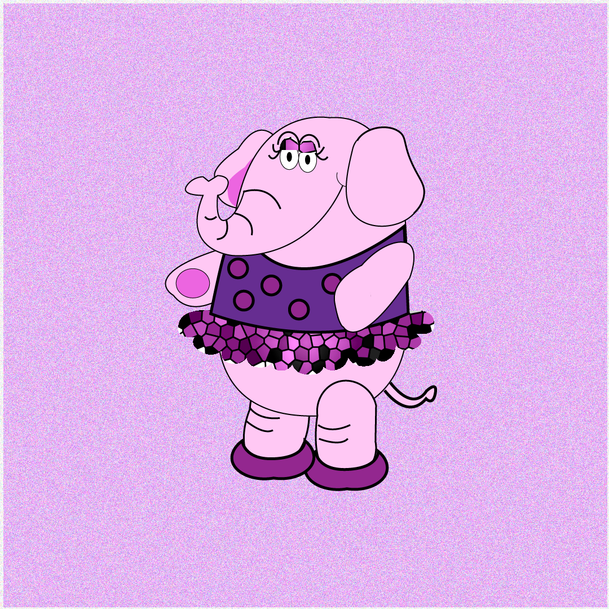

01
Essa personagem foi feita pensada na minha animação, a animação se baseia
em um sonho que eu tinha quando era criança. Para ver a animação clique no botão "EXPLORAR
TRABALHO".
Elefantinha do Xixi
Elefantinha do Xixi é meu projeto integrador de animação e nasceu de uma sonho da minha infância. Quando eu era pequena, sempre que sonhava com uma elefantinha, fazia xixi na cama. Anos depois, quando lembrei desse sonho, achei tão curioso que pensei que deveria transformar essa memória em uma animação.
Explorar Trabalho